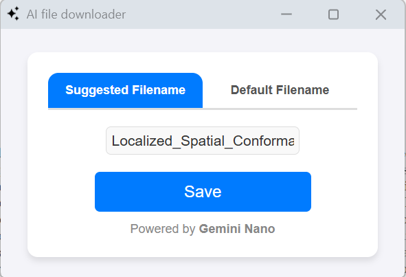
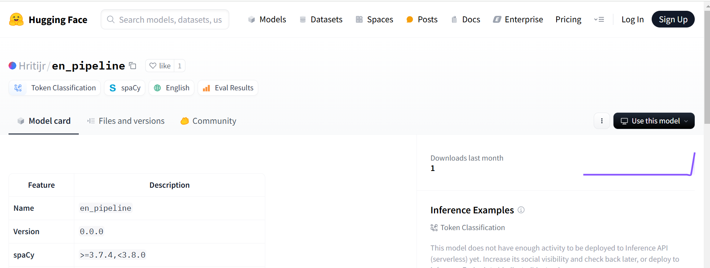

I'm a '24 Mathematics and Computing undergrad. from Netaji Subhas University of Technology. I am an ex-competitive coder and prompt engineer at softage.ai. I was part of the team responsible for creating agentic data for a client with goals aligned with that of runner h
My areas of interest include on-device AI and WebLLMs. I think it won't be long when LLMs could run locally on our phones and PCs. We've already been seeing great effort by hardware giants in this area. Drop an email, and let's chat — even if it's just a silly idea!
|
NameR : Gemini Nano Powered File Namer
NameR, a Gemini Nano powered file downloader that suggests file name on the go, so you never have to worry about absurd default filenames
|
 |
|
Named Entity Recognition for Automotive Vehicles
Fine-tuned SpaCy’s English model to perform Named entity recognition on tags like components, failure issue, vehicle model and corrective action.
|
 |
|
Submission to Mistral-AI Hackathon
One of the steps involved in cleaning a video is trimming unnecessary portion from it. For instance, expert labelled videos
like 'Minecraft gameplay' don't require video segement of user setting up the game. This is a manual task.
I've tried to automate this leveraing LLM and video transcript.
|